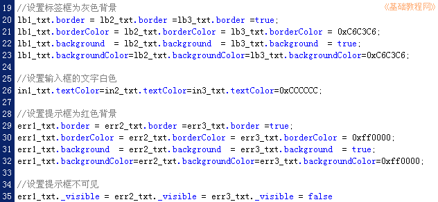

Flash脚本实例《打字》制作教程
作者：TeliuTe 来源：基础教程网
六、设置文本框格式 返回目录 下一课
标签框和输入框还不能显示，需要设置一下，下面我们来看一个练习；
1、标签框
1）标签框里放的是范文，在输入框里照着输入，设置为灰色背景，绿色文字；
2）接着上一课的代码，继续输入下面的内容；
lb1_txt.border = lb2_txt.border =lb3_txt.border =true;
lb1_txt.borderColor = lb2_txt.borderColor = lb3_txt.borderColor = 0xC6C3C6;
lb1_txt.background = lb2_txt.background = lb3_txt.background = true;
lb1_txt.backgroundColor=lb2_txt.backgroundColor=lb3_txt.backgroundColor=0xC6C3C6;
3）这儿是连续设置，每行也可以分开写，分别设置了边框颜色和背景色；
4）同样设置输入框的格式，只是把文本颜色改成白色，继续输入下面的代码；
in1_txt.textColor=in2_txt.textColor=in3_txt.textColor=0xCCCCCC;
2、出错提示框
1）在输错的时候，显示一个红色的文本框，表示输入错误了；
2）继续输入下面的代码，设定红色背景色的格式，方法跟标签框一样；
err1_txt.border = err2_txt.border =err3_txt.border =true;
err1_txt.borderColor = err2_txt.borderColor = err3_txt.borderColor = 0xff0000;
err1_txt.background = err2_txt.background = err3_txt.background = true;
err1_txt.backgroundColor=err2_txt.backgroundColor=err3_txt.backgroundColor=0xff0000;
3）保存一下，测试一下，发现三个提示框都显示了，刚开始应该是隐藏的，继续输入下面的代码；
err1_txt._visible = err2_txt._visible = err3_txt._visible = false
4）圆点后面的 _visible 是可见属性，值是 false 否定不可见，
保存一下，测试一下；

本节学习了设置文本框格式的操作，如果你成功地完成了练习，请继续学习下一课内容；
返回目录 下一课
本教程由86团学校TeliuTe制作|著作权所有
基础教程网：http://teliute.org/
美丽的校园……
转载和引用本站内容，请保留作者和本站链接。